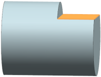

Specify the operation parameters
-
In the Geometry group, click Specify Cut Area Floor
 .
.
The Cut Area dialog box is displayed.
-
Select the face as shown.

-
Click OK.
The Floor Wall IPW dialog box is displayed.
-
In the Path Settings group, set the following:
-
Cut Pattern = Zig
-
Depth Per Cut = 5
-
-
Press Enter.

The cut region, cut levels, and IPW are displayed.
-
In the Actions group, click Generate
 .
.

The cut region, cut levels, and IPW are displayed with the tool path.